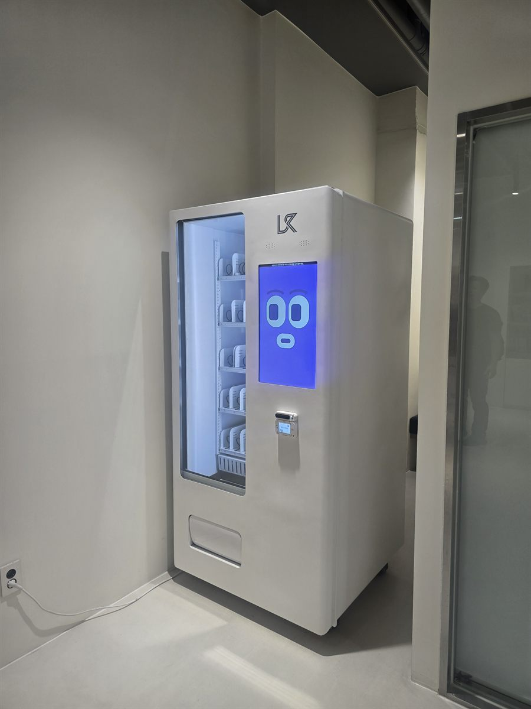

학원은 사람이 많은 건물인데도 자판기 자리가 잘 안 나오는 곳입니다. 복도는 좁고, 양옆은 수업 중인 강의실이고, 남는 벽은 대부분 사물함이나 게시판이 차지하고 있습니다. 그래서 학원 문의를 받으면 제일 먼저 묻는 것이 넓이가 아니라 "수업 중에 소리가 들어가도 되는 벽인가"입니다. 자판기는 냉장 압축기가 돌면서 낮은 소음을 내고, 문을 여닫는 소리도 납니다. 강의실 바로 옆 벽에 붙이면 며칠 만에 자리를 옮겨 달라는 연락이 옵니다.
이번 현장은 그 점에서 자리가 잘 나온 편이었습니다. 복도가 한 번 꺾이는 모서리였는데, 안쪽은 강의실 벽이 아니라 유리 칸막이로 막힌 통로였고 바로 옆이 출입구 쪽이라 소리가 밖으로 빠졌습니다. 수업 중에는 지나다니는 사람이 없고, 쉬는 시간에는 양쪽에서 나온 학생이 모두 이 모서리를 지나갑니다. 쓰는 시간에만 사람이 몰리고, 안 쓰는 시간에는 조용한 자리가 학원에서는 가장 좋습니다. 자리를 잡고 나서 본 것은 세 가지였습니다. 벽 콘센트가 기계 뒤에 그대로 물리는지, 복도 폭이 기계를 놓고도 두 사람이 비껴갈 만큼 남는지, 그리고 바닥 수평입니다. 오래된 건물은 복도 끝으로 갈수록 바닥이 조금씩 기울어 있는 경우가 있어, 앞다리 높이를 조정해 문이 저절로 열리지 않는 각도를 맞췄습니다. 전원은 뒤쪽 콘센트에 바로 물렸고, 선이 복도로 나와 발에 걸리지 않도록 기계 옆선을 따라 정리했습니다.
구리 학원에 맞는 구성
학원 자판기는 대형 편의점을 흉내 내면 안 됩니다. 칸을 잔뜩 늘려 종류를 많이 넣어도, 학생이 고를 수 있는 시간은 쉬는 시간 10분 안의 1~2분입니다. 그래서 빨리 보이고 빨리 집히는 것 위주로 짰습니다. 냉장 칸은 생수·이온음료·탄산과 캔커피를 눈높이에 두고, 아래 칸에는 과자·젤리·초콜릿바처럼 손에 쥐고 강의실로 들어갈 수 있는 것을 넣었습니다. 저녁 시간대가 긴 학원이면 삼각김밥이나 샌드위치 같은 냉장 간편식 한 줄을 넣는 것도 방법입니다. 저녁을 못 먹고 오는 학생이 많은 시간대에는 이 칸이 가장 먼저 빕니다.
결제는 신용·체크카드와 삼성페이·카카오페이·네이버페이를 받도록 했고, 현금함은 넣지 않았습니다. 학원은 관리자가 상주하긴 해도 자판기를 봐 줄 사람은 아니어서, 동전이 걸리거나 지폐를 먹었다는 이야기가 나오면 결국 원장님이 응대해야 합니다. 카드와 간편결제만 받으면 그런 연락이 거의 사라집니다. 가격도 천 원 단위로 떨어지게 맞추는 편이 좋습니다. 학생 손님은 금액 감각이 예민해서 애매한 끝자리는 그 자체로 안 사는 이유가 됩니다. 칸별 재고와 시간대별 판매는 휴대폰 앱에서 보므로, 어느 요일 몇 시에 무엇이 비는지 두 주만 지나면 눈에 들어옵니다. 원장님이 직접 채우시는 경우에는 이 기록만 보고 수업 없는 요일에 한 번만 다녀가시면 됩니다.
학원 자판기, 좋은 점과 어려운 점
좋은 점부터 말씀드리면 손님이 정해져 있다는 것입니다. 길거리 자판기는 오늘 몇 명이 지나갈지 모르지만, 학원은 시간표가 곧 사람 수입니다. 어느 반이 몇 시에 끝나는지 알면 회전을 거의 가늠할 수 있고, 채우는 날을 미리 잡을 수 있습니다. 학원 쪽 이득도 따로 있습니다. 학생이 음료를 사러 밖으로 나갔다가 늦게 들어오는 일이 줄고, 늦은 시간에 아이를 기다리는 학부모가 앉아 있을 때 마실 것이 건물 안에 있다는 점도 작지 않습니다. 실내라 비바람을 타지 않고, 문을 잠그는 건물이라 파손·도난 걱정이 적은 것도 장점입니다.
어려운 점도 그대로 적겠습니다. 가장 큰 것은 시험 기간과 방학에 따라 출렁인다는 점입니다. 학기 중 평일 저녁에 몰아서 팔리고, 특강이 없는 기간에는 눈에 띄게 줄어듭니다. 매달 고른 수익을 기대하시면 어긋나기 쉽고, 바쁜 달에 번 것으로 한 해를 본다고 생각하시는 편이 맞습니다. 유통기한 관리도 신경 써야 합니다. 회전이 느린 달에 냉장 간편식을 그대로 두면 버리는 양이 늘어나므로, 한산한 기간에는 음료 위주로 줄이는 조절이 필요합니다. 쓰레기도 미리 정해 두는 편이 좋습니다. 자판기 옆에 분리수거함이 없으면 빈 캔이 복도나 강의실에 남아 청소 부담이 늘고, 그게 설치 몇 주 만에 불만으로 돌아옵니다. 마지막으로 건물주·관리단 동의가 필요합니다. 학원이 세 들어 있는 상가 건물은 공용 복도 사용과 전기 요금 정산 방식을 먼저 정리해야 해서, 단독 매장보다 준비 기간이 조금 더 깁니다.
구리 무인매장, 이런 자리가 잘 됩니다
구리는 면적이 작은 대신 사람과 동선이 촘촘하게 겹치는 도시입니다. 서울 중랑구·광진구와 바로 붙어 있고 남양주와도 맞닿아 있어, 시 경계를 넘나드는 생활권이 하나로 움직입니다. 자리 성격도 이 짜임새를 따라갑니다. 수택동 돌다리 일대는 구리에서 가장 오래되고 두꺼운 상권이라 학원·독서실·PC방·코인노래연습장이 한 건물 안에 층별로 섞여 있는 곳이 많습니다. 이런 건물은 자판기 한 대가 한 층이 아니라 건물 전체 손님을 받습니다. 바로 옆 구리전통시장 주변은 오가는 사람이 많되 실내 공간이 귀해서, 상가 안쪽 통로나 2층 이상 사무실 층이 오히려 자리가 잘 나옵니다.
인창동은 구리역과 구리농수산물도매시장을 낀 구역이라 결이 다릅니다. 도매시장 쪽은 새벽에 움직이는 사람이 있어 24시간 돌아가는 자리의 값이 큽니다. 매점이 닫은 시간에 자판기만 남으면 회전이 빠릅니다. 구리역은 경의중앙선에 8호선 별내선까지 들어오면서 오가는 인구가 더 두꺼워졌고, 역 주변 상가와 스터디카페·무인카페 문의가 꾸준합니다. 교문동·토평동 일대는 아파트 단지와 학교가 붙어 있어 단지 상가와 커뮤니티실, 학원가 성격이 강하고, 장자호수생태공원과 구리한강시민공원처럼 사람이 걸어서 모이는 자리가 가까워 계절에 따라 음료 회전이 크게 올라갑니다. 갈매동은 택지지구로 새로 지은 아파트와 오피스텔이 많아 로비·커뮤니티실 설치가 수월합니다. 새 건물은 전원과 반입 경로가 깨끗해 작업이 빠르고, 경춘선 갈매역을 쓰는 세대가 많아 아침저녁 동선이 분명합니다. 아천동은 구리암사대교로 서울과 이어져 오가는 차량이 많은 구역이라, 실내 대기 공간이 있는 자리라면 잘 맞습니다. 인창동 동구릉 주변처럼 철마다 사람이 모이는 곳도 기다리는 시간이 생기는 자리라 자판기 성격에 어울립니다.
구리 서비스 지역
수택동 · 인창동 · 교문동 · 토평동 · 갈매동 · 사노동 · 아천동
행정동 — 갈매동 · 동구동 · 인창동 · 교문1동 · 교문2동 · 수택1동 · 수택2동 · 수택3동
역 — 구리역 · 갈매역
주요 구역 — 돌다리 상권 · 구리전통시장 · 구리농수산물도매시장 · 장자호수생태공원 · 구리한강시민공원 · 동구릉 · 갈매지구
인접한 남양주 · 하남 · 서울 중랑구 · 광진구 · 강동구까지 같은 조건으로 나갑니다.
구리 무인창업, 이렇게 시작하시면 됩니다
설치비는 받지 않습니다. 자리 확인부터 품목 구성, 기계 반입, 카드 결제 연동, 재고 채우는 방법까지 한 번에 안내해 드립니다. 학원이나 독서실처럼 수업 중 조용해야 하는 건물은 반입 시간을 수업이 없는 아침이나 주말로 잡습니다. 견적 전에 확인하는 것은 복도 폭·콘센트 위치·엘리베이터와 출입문 폭 세 가지입니다. 특히 승강기가 작은 상가 건물은 기계가 안 들어가 계단으로 올려야 하는 경우가 있어, 이 확인이 빠지면 설치 당일에 일이 멈춥니다. 자리 사진 한 장과 대략의 복도 폭만 보내 주셔도 들어갈지 아닐지는 미리 봐 드립니다.
비용은 구입이 렌탈보다 유리한 편입니다. 렌탈료를 몇 년 내는 것보다 처음에 사 두는 쪽이 총액이 낮게 나오는 경우가 많고, 오래 쓸수록 차이가 벌어집니다. 구성별 36개월 총비용은 구입 vs 렌탈 비교 가이드에 정리해 두었습니다.
구리 무인자판기 설치 상담
세워 둘 자리 사진 한 장만 보내 주셔도 됩니다. 남는 벽과 콘센트, 복도 폭과 반입 경로를 보고 들어갈 수 있는 크기를 먼저 봐 드린 뒤 견적을 보내 드립니다.
※ 사진은 픽포스가 시공한 설치 사례이며, 글에 적힌 지역의 현장 사진은 아닙니다. 자판기 구성과 품목은 자리와 업종에 따라 달라지며, 상가·학원 건물 설치는 건물주·관리단의 동의 조건과 전원 용량, 반입 경로를 현장에서 먼저 확인합니다. 정확한 금액은 견적서로 안내드립니다.